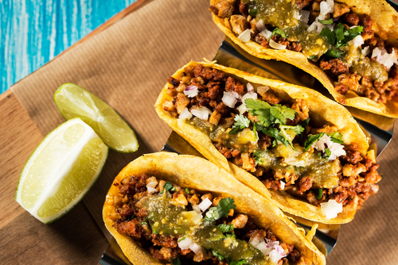

Tacos

Description
Los tacos mexicanos son uno de los platos más famosos de la tradición gastronómica de este país, y no podíamos dejar de traeros la receta porque como sabéis, ¡nos encanta la comida mexicana!
Después de las recetas del pastelon, Canelones, ¡llegó el turno de los tacos! Como en otras recetas mexicanas, existen muchísimas variantes ya que se pueden rellenar con prácticamente cualquier cosa; nosotros os dejamos la receta con carne de ternera y con pollo, y os proponemos algunas variantes más. Además, os contaremos cómo hacer las tortillas de maíz en casa, y también las salsas ideales para acompañar: guacamole y pico de gallo.
Ingredients
- 500 g de carne picada de ternera
- 1 cebolla pequeña
- 1 chile verde fresco o serrano (puedes comprar chiles serranos aquí)
- 2 dientes de ajo
- 1 cucharada de comino en polvo (puedes comprar aquí)
- 1/2 cucharadita (o al gusto) de chile seco (puedes comprar aquí)
- 1 cucharada de orégano
- aceite de oliva
- el zumo de 1/2 lima
- sal
- cilantro
- 8-1o tortillas de maíz (puedes comprar aquí)
- Pico de gallo (la receta más abajo)
- Guacamole (receta más abajo)
- Lechuga cortada en juliana
- Queso cheddar rallado
Steps
- Picar la cebolla, el chile fresco, el cilantro y el ajo por separado y reservar.
- Calentar 2 o 3 cucharadas de aceite en una sartén y sofreír con el orégano, el comino y el chile seco, unos dos minutos hasta que empiece a soltar aroma.
- Añadir el ajo y el chile y sofreír 2 o 3 minutos más.
- Añadir la carne, salar y remover, y dejar cocinar hasta que la carne esté hecha, unos 10 minutos.
- Apagar el fuego, añadir el cilantro picado y el zumo de lima y remover.